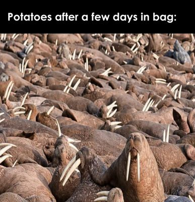

Potatoes After a Few Days in the Bag meme: what it means and where it came from

Posted by u/Awkward-Comedian-506 on r/memes. © its owner; shown in small form for ranking and commentary.
What does the Potatoes After a Few Days in the Bag meme mean?
A photo of a crowded walrus colony with tusks poking out in every direction, captioned as what potatoes look like after a few days in the bag. The joke is that the tusks look like the sprouts on forgotten potatoes.
Where did the Potatoes After a Few Days in the Bag meme come from?
Posted to r/memes by u/Awkward-Comedian-506 on November 1, 2026 (PT) under the title "Potatoes after a few days in bag," and it reached #2 on the subreddit's top posts that day. Who took the photo and who first wrote the caption haven't been confirmed.
The original creator of this meme hasn’t been confirmed. This section states only what the linked sources show.
Sources & details
First seen on MemeStand November 2, 2026. Last seen on MemeStand November 2, 2026. Best rank: #5 today (Nov 2, 2026).
Ranked post or trend first seen online: November 1, 2026.
Latest evidence on file: Reddit r/memes #3.
Daily meme reports featuring it
Written 2026-11-02; last reviewed 2026-11-07 from the sources above. Explanations describe memes and online reactions; they are not MemeStand's statements of fact about the people in them. Corrections or removals: email hello@memestand.com. Rights holders: see DMCA / Takedowns.